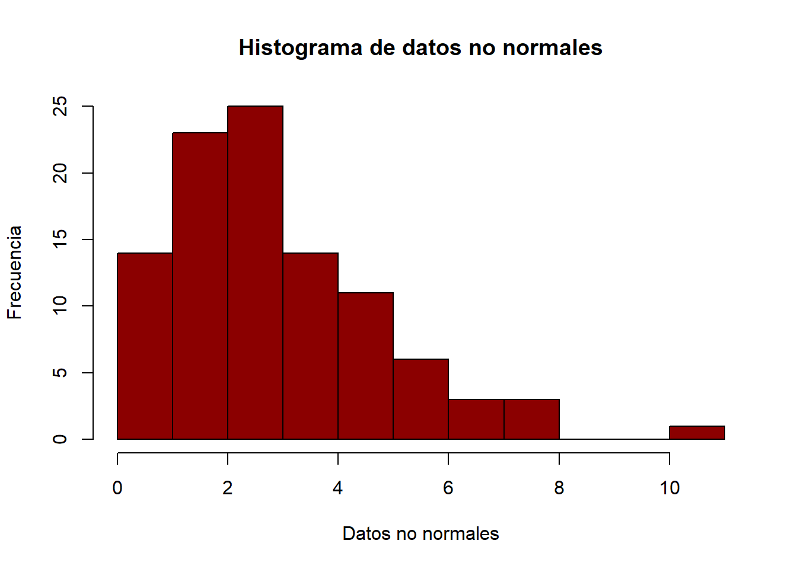
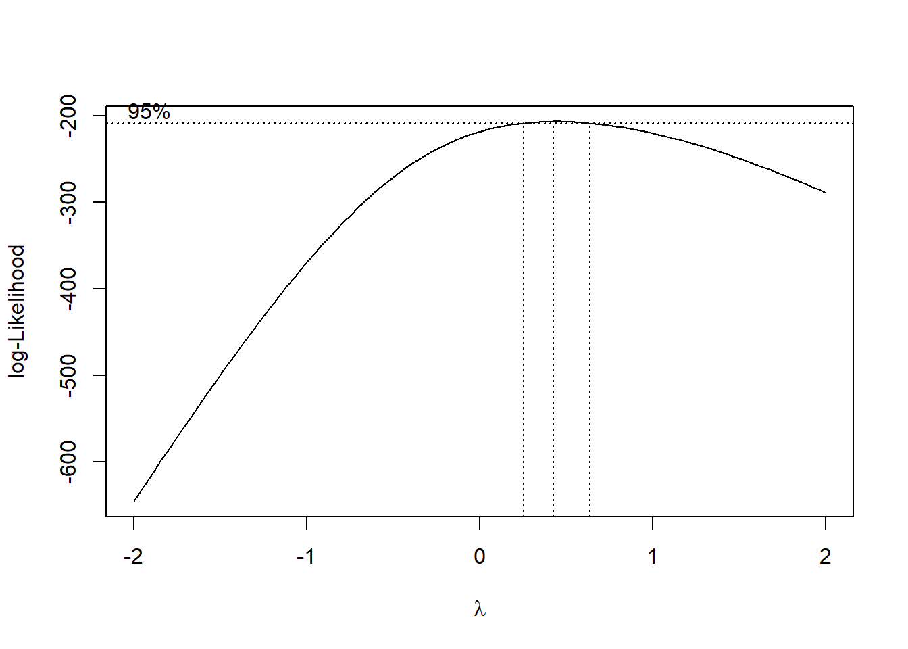
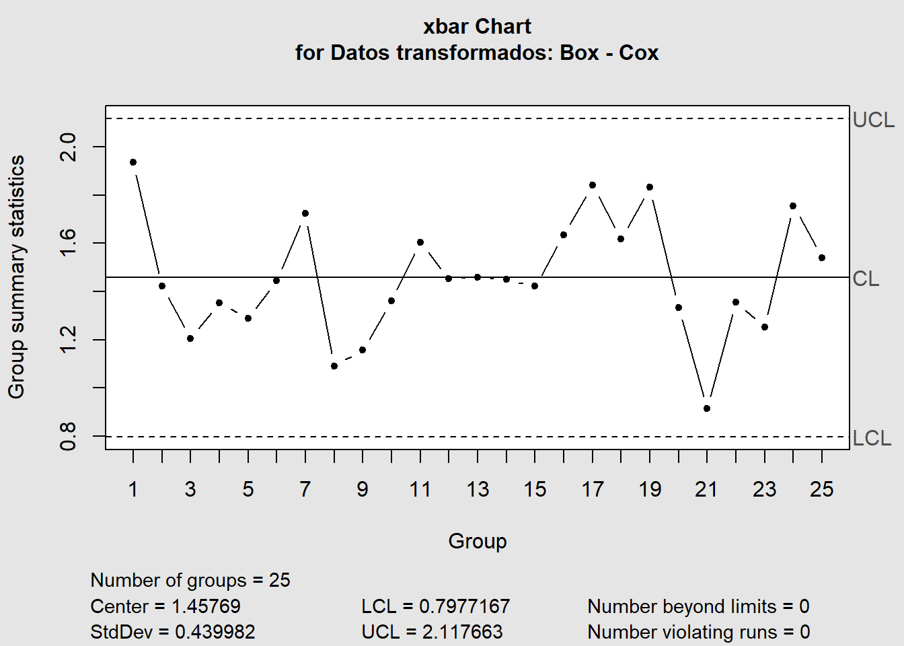
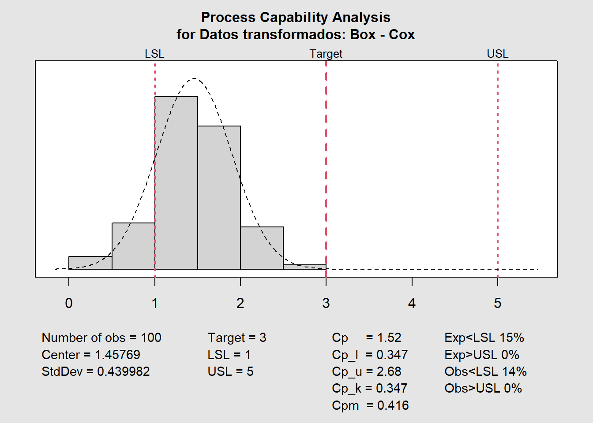
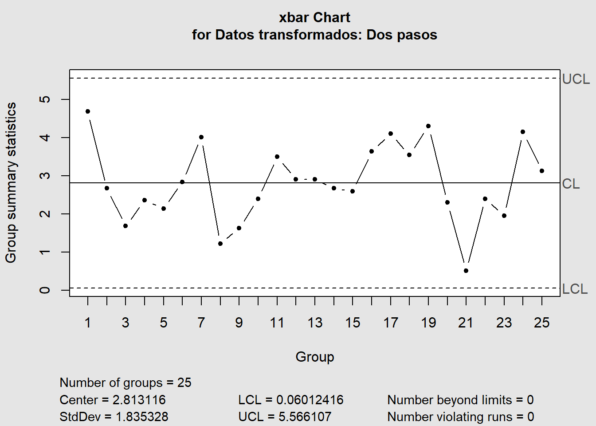

library(devtools)
devtools::install_github("cran/qualityTools")
devtools::install_github("hrbrmstr/Johnson")Análisis de capacidad para datos no normales
Pasos previos
El paquete qualityTools ya no está disponible para instalación directa desde RStudio, sino que debe instalarse de la siguiente forma. Lo mismo sucede para el paquete Johnson.
Introducción
Es relativamente común encontrarse con procesos que no siguen la distribución normal, ya sea por que así es como debe comportarse o bien, por errores que suceden a la hora de recolectar, almacenar o procesar los datos.
Lo aquí abordado corresponde al proceder cuando la distribución es intrinsicamente no normal. A grandes razgos se van a tratar los siguientes tópicos.
- Transformaciones no lineales
- Método de los percentiles
Librerías
Las librerías que vamos a usar en el desarrollo de estos ejemplos se enlistan a continuación:
library(tidyverse)
library(qualityTools)
library(Johnson) # transformación de Johnson
library(MASS) # transformación Box-Cox
library(car) # algunos gráficos
library(qcc) Análisis de capacidad para datos no normales
Para el desarrollo de este ejemplo se van a generar, de forma intencional, datos que no siguen la distribución normal.
En este caso será una distribución Weibull, con parámetros forma y escala.
set.seed(20250512)
datos_no_normales <- rweibull(100, shape = 1.5, scale = 3)
hist(datos_no_normales,
main = "Histograma de datos no normales",
col = "darkred",
xlab = "Datos no normales",
ylab = "Frecuencia")
Como se puede apreciar, los datos no siguen la distribución normal
shapiro.test(datos_no_normales)
Shapiro-Wilk normality test
data: datos_no_normales
W = 0.92514, p-value = 2.664e-05car::qqPlot(datos_no_normales,
main = "Gráfico cuantil-cuantil",
xlab = "Cuántiles teóricos",
ylab = "Cuantiles",
col.lines = "darkred")
[1] 92 94Suponga que las especificaciones son \(3 \pm 2\). Y que el proceso se encuentra bajo control, aunque vayamos a generar algunos gráficos para comprobarlo.
hist(datos_no_normales,
main = "Histograma de datos no normales",
col = "darkred",
xlab = "Datos no normales",
ylab = "Frecuencia")
abline(v = c(1, 3, 5), col = "gold3", lwd = 3.5, lty = 2)
Transformaciones no lineales
El primer abordaje corresponde al uso de transformaciones no lineales.
Box-Cox
Recuerde que esta familia de transformaciones sigue la siguiente fórmula.
\[ w_i=\Biggl\{ \begin{matrix} x_i^\lambda \quad si \quad \lambda \ne 0 \\ log(x_i) \quad si \quad \lambda = 0\end{matrix}, \text{para } x_i > 0 \]
bc <- MASS::boxcox(lm(datos_no_normales ~ 1))
lambda <- bc$x[which.max(bc$y)]
lambda[1] 0.4242424Algunos software trabajan directamente con los valores redondeados, por lo que en este caso \(\lambda=-2\)
Ahora, apliquemos la transformación
# Sin redondeo
datos_transformados_1 <- datos_no_normales^lambda
shapiro.test(datos_transformados_1)
Shapiro-Wilk normality test
data: datos_transformados_1
W = 0.99547, p-value = 0.9855# Con redondeo
datos_transformados_2 <- datos_no_normales^0.5
shapiro.test(datos_transformados_2)
Shapiro-Wilk normality test
data: datos_transformados_2
W = 0.99494, p-value = 0.9735Nótese como en ambas situaciones, los datos ahora si siguen la distribución normal. Ahora analicemos la capacidad.
XR <- matrix(datos_transformados_1, ncol = 4) %>%
qcc::qcc(type = "xbar", data.name = "Datos transformados: Box - Cox")
qcc::process.capability(XR,
spec.limits = c(1, 5),
target = 3,
breaks = "sturges")
Process Capability Analysis
Call:
qcc::process.capability(object = XR, spec.limits = c(1, 5), target = 3, breaks = "sturges")
Number of obs = 100 Target = 3
Center = 1.458 LSL = 1
StdDev = 0.44 USL = 5
Capability indices:
Value 2.5% 97.5%
Cp 1.5152 1.3043 1.7257
Cp_l 0.3467 0.2786 0.4149
Cp_u 2.6837 2.3652 3.0021
Cp_k 0.3467 0.2655 0.4280
Cpm 0.4157 0.3359 0.4953
Exp<LSL 15% Obs<LSL 14%
Exp>USL 0% Obs>USL 0%Pero hay algo raro, ¿no? Es porque aún no transformamos los límites y el nominal.
# ponga atención, a veces la transformación invierte los límites
c(1, 3, 5)^lambda[1] 1.000000 1.593731 1.979396qcc::process.capability(XR,
spec.limits = c(1, 1.979396),
target = 1.593731,
breaks = "sturges")
Process Capability Analysis
Call:
qcc::process.capability(object = XR, spec.limits = c(1, 1.979396), target = 1.593731, breaks = "sturges")
Number of obs = 100 Target = 1.594
Center = 1.458 LSL = 1
StdDev = 0.44 USL = 1.979
Capability indices:
Value 2.5% 97.5%
Cp 0.3710 0.3194 0.4225
Cp_l 0.3467 0.2786 0.4149
Cp_u 0.3952 0.3235 0.4669
Cp_k 0.3467 0.2655 0.4280
Cpm 0.3544 0.3033 0.4055
Exp<LSL 15% Obs<LSL 14%
Exp>USL 12% Obs>USL 13%Johnson
Nota: este paquete
Johnsonfue removido del CRAN (repositorio oficial), y en general suele ser algo deficiente en el cálculo de las transformaciones.
Esta está compuesta por tres familias de transformaciones: \(S_B, S_L, S_U\).
datos_transformados_3 <- Johnson::RE.Johnson(datos_no_normales)
shapiro.test(datos_transformados_3$transformed)
Shapiro-Wilk normality test
data: datos_transformados_3$transformed
W = 0.99375, p-value = 0.929Habiendo verificado que la transformación es efectiva, podemos proceder a realizar el análisis de capacidad.
# verificamos la familia de transformaciones
datos_transformados_3$`function`[1] "SB"Sabiendo que es \(S_B\), se puede proceder según la fórmula
\[ w_i = \gamma+\eta\cdot ln\Big[\frac{x_i-\varepsilon}{\lambda+\varepsilon-x_i}\Big] \]
Entonces:
print(g <- datos_transformados_3$f.gamma)[1] 3.081273print(l <- datos_transformados_3$f.lambda)[1] 24.67992print(eta <- datos_transformados_3$f.eta)[1] 1.690125print(ep <- datos_transformados_3$f.epsilon)[1] -0.9426102x_i <- c(1, 3, 5)
g + (eta * log((x_i-ep)/(l+ep-x_i))) #log = ln[1] -1.0763915 0.2755111 1.1403874Por lo tanto:
XR <- matrix(datos_transformados_3$transformed, ncol = 4) %>%
qcc::qcc(type = "xbar", data.name = "Datos transformados: Johnson")
qcc::process.capability(XR,
spec.limits = c(-1.0763915, 1.1403874),
target = 0.2755111,
breaks = "sturges")
Process Capability Analysis
Call:
qcc::process.capability(object = XR, spec.limits = c(-1.0763915, 1.1403874), target = 0.2755111, breaks = "sturges")
Number of obs = 100 Target = 0.2755
Center = -0.02526 LSL = -1.076
StdDev = 0.9774 USL = 1.14
Capability indices:
Value 2.5% 97.5%
Cp 0.3780 0.3254 0.4305
Cp_l 0.3585 0.2895 0.4275
Cp_u 0.3975 0.3256 0.4694
Cp_k 0.3585 0.2762 0.4407
Cpm 0.3613 0.3091 0.4133
Exp<LSL 14% Obs<LSL 14%
Exp>USL 12% Obs>USL 13%Transformación en dos pasos
En Excel también puede encontrar una forma de abordar este caso, pues es relativamente sencillo de aplicar.
Descargar Transformación en dos pasos con Excel
Dada algunas pequeñas diferencias en los algoritmos programados, encontrará disimilitudes en algunos de los resultados obtenidos.
dos_pasos <- bestNormalize::bestNormalize(datos_no_normales)
datos_transformados_4 <- dos_pasos$x.t * sd(datos_no_normales) +
mean(datos_no_normales)
shapiro.test(datos_transformados_4)
Shapiro-Wilk normality test
data: datos_transformados_4
W = 0.98477, p-value = 0.3055Como puede observar, la transformación es efectiva. Ahora se deben obtener los límites.
limites <- predict(dos_pasos,
newdata = c(1, 3, 5),
inverse = F) * sd(datos_no_normales) +
mean(datos_no_normales)
limites[1] 0.7706979 3.5210154 4.9708862Resuelto esto, calculemos la capacidad
XR <- matrix(datos_transformados_4, ncol = 4) %>%
qcc::qcc(type = "xbar", data.name = "Datos transformados: Dos pasos")
qcc::process.capability(XR,
spec.limits = c(0.7706979, 4.9708862),
target = 3.5210154,
breaks = "sturges")
Process Capability Analysis
Call:
qcc::process.capability(object = XR, spec.limits = c(0.7706979, 4.9708862), target = 3.5210154, breaks = "sturges")
Number of obs = 100 Target = 3.521
Center = 2.813 LSL = 0.7707
StdDev = 1.835 USL = 4.971
Capability indices:
Value 2.5% 97.5%
Cp 0.3814 0.3283 0.4344
Cp_l 0.3709 0.3010 0.4408
Cp_u 0.3919 0.3204 0.4633
Cp_k 0.3709 0.2877 0.4542
Cpm 0.3559 0.3035 0.4081
Exp<LSL 13% Obs<LSL 14%
Exp>USL 12% Obs>USL 13%Método de los percentiles
Para aplicar este método primero debe identificarse la distribución subyacente que mejor se ajusta a los datos. Esto se puede hacer de muchas formas, esta es una de ellas.
fitdistrplus::descdist(datos_no_normales)
summary statistics
------
min: 0.05970522 max: 10.59864
median: 2.457949
mean: 2.813116
estimated sd: 1.911338
estimated skewness: 1.168548
estimated kurtosis: 4.996266 Del gráfico se muestra que la Weibull, lognormal y gamma son posibles candidatos.
# probamos varias distribuciones
distribuciones <- c("weibull", "lnorm", "exp", # agregar más si es conveniente
"gamma", "unif", "logis") %>%
purrr::map(function(x){
fitdistrplus::fitdist(datos_no_normales, x)
})
bondad_ajuste <- fitdistrplus::gofstat(distribuciones)
round(bondad_ajuste$chisqpvalue,3) # valores p1-mle-weibull 2-mle-lnorm 3-mle-exp 4-mle-gamma 5-mle-unif
0.920 0.051 0.015 0.755 0.000
6-mle-logis
0.798 bondad_ajuste$kstest # decisiones kolmogorov 1-mle-weibull 2-mle-lnorm 3-mle-exp 4-mle-gamma 5-mle-unif
"not rejected" "not rejected" "rejected" "not rejected" "rejected"
6-mle-logis
"not rejected" bondad_ajuste$adtest # decisiones anderson - darling 1-mle-weibull 2-mle-lnorm 3-mle-exp 4-mle-gamma 5-mle-unif
"not rejected" "not computed" "rejected" "not rejected" "not computed"
6-mle-logis
"rejected" Observando los resultados se intuye que se puede usar la Weibull o la gamma. Como ya sabemos que los datos provenienen de una Weibull (además de su alto valor P), se va a trabajar con ello.
Estimación con qualityTools
Este paquete no está en CRAN, su instalación es manual. Suele presentar errores en versiones actuales de
R.
resultado <- qualityTools::cp(datos_no_normales,
distribution = "weibull",
lsl = 1,
target = 3,
usl = 5)
Anderson Darling Test for weibull distribution
data: datos_no_normales Error in round(x$statistic, 4): non-numeric argument to mathematical function
Estimación manual
A grosso modo, recordemos que la fórmula es:
\[ C_p(q) = \frac{USL - LSL}{x_{0.99865}-x_{0.00135}} \]
Con sus respectivas variantes para \(C_{pk}\).
Sabiendo que la distribución es Weibull, se van a estimar sus parámetros.
fitdistrplus::fitdist(datos_no_normales, "weibull")Fitting of the distribution ' weibull ' by maximum likelihood
Parameters:
estimate Std. Error
shape 1.494667 0.1165100
scale 3.110131 0.2188012percentiles <- qweibull(c(0.99865, 0.00135, 0.5), # superior, inferior, mediana
shape = 1.494667, scale = 3.110131)
# Entonces Cp
(5-1)/(percentiles[1]-percentiles[2])[1] 0.3648482# Y por tanto Cpk
min((5-percentiles[3])/(percentiles[1]-percentiles[3]), #cpu
(percentiles[3]-1)/(percentiles[3]-percentiles[2])) #cpl[1] 0.2995426¿Cómo modificar valores?
Si se desea agregar otros parámetros en las funciones, puede consultar la documentación de la función con help(qualityTools) u otro paquete (cambiando el nombre)